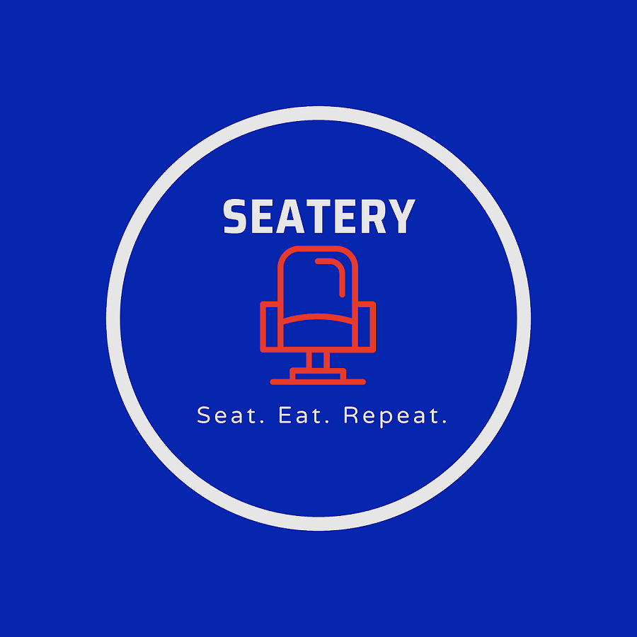
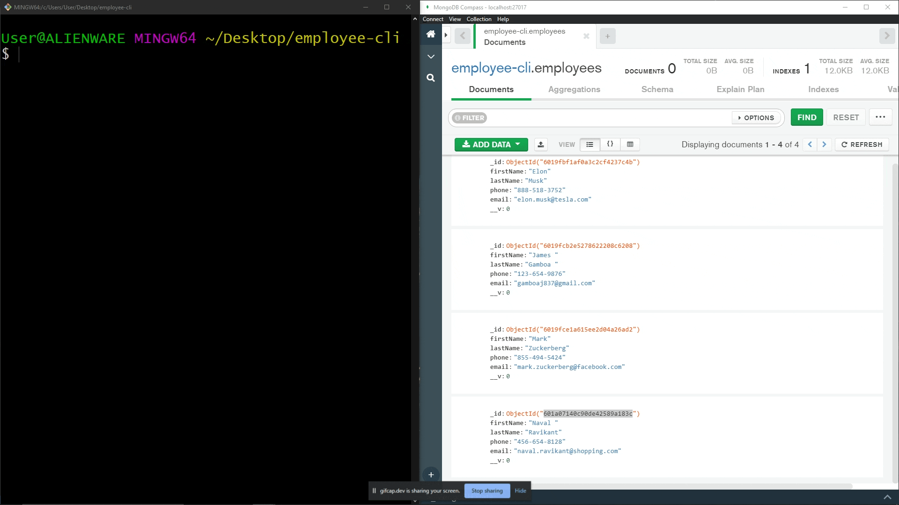

My Work

Seatery
A peer to peer venue specific delivery application. I was personally responsible for creating the full stack functionality for the FAQ's page and Contact Us form
Check it out!

CLI Project
A command line interface with create, find, update, delete, and list all functionality.
Check it out!